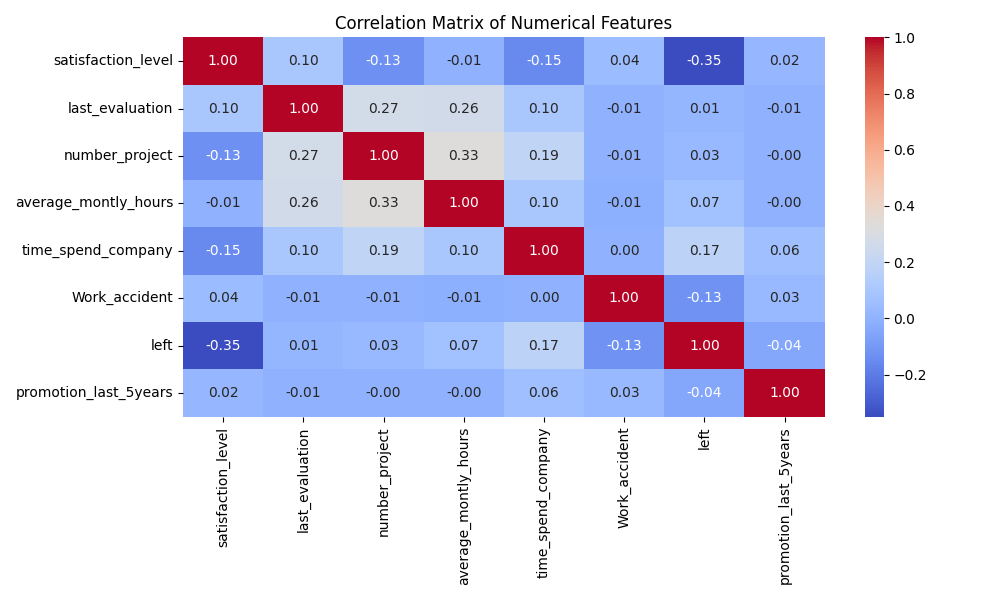
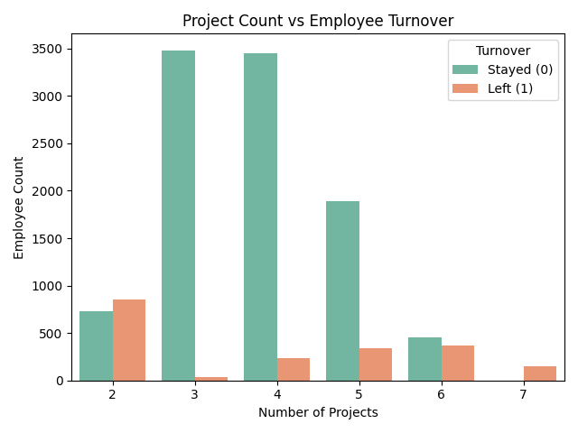
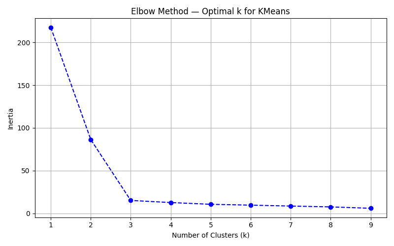
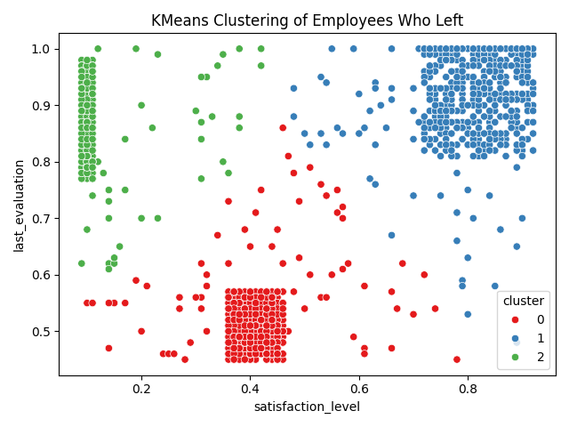
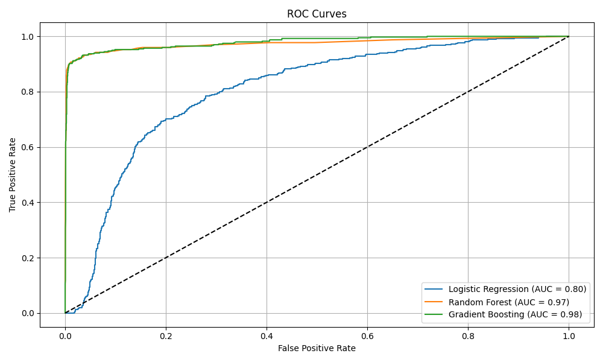
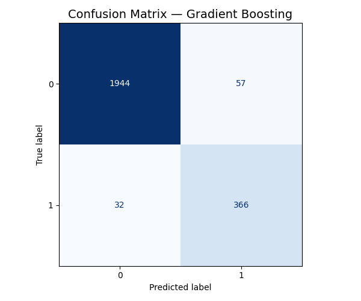

University of San Diego — AI/ML Bootcamp (Powered by Fullstack Academy)
Course Unit: Machine Learning
Submission Date: July 12, 2025
Author: Carllos Watts-Nogueira
To predict employee attrition using historical HR data and deliver actionable insights for retention planning.
This project uses machine learning to predict employee turnover at Portobello Tech. By analyzing HR data, we identify at-risk employees and recommend retention strategies.
The dataset includes satisfaction scores, evaluation ratings, project counts, monthly working hours, and salary levels.
sales → department)Correlation Heatmap:
A correlation heatmap revealed strong relationships between satisfaction level and turnover.
Distribution Plots:


Distribution plots showed skewness and outliers in satisfaction, evaluation, and monthly hours.
Project Count vs Turnover:
A bar plot of project count vs turnover highlighted workload imbalance among employees who left.
| Dataset Version | Description | Variable Name |
|---|---|---|
| Original | One-hot encoded, unscaled | X |
| Interaction Features | PolynomialFeatures | X_poly |
| Standardized | Zero mean, unit variance | X_scaled |
| Outlier-Clipped | Clipped using IQR | X_clipped |
Elbow Method:
KMeans Clustering:
Original: left 0 7999 1 1593 Resampled: left 0 7999 1 7999
ROC Curves:
Confusion Matrices:
| Model | FP | FN | TP | AUC |
|---|---|---|---|---|
| Logistic Regression | 356 | 134 | 264 | 0.80 |
| Random Forest | 23 | 39 | 359 | 0.97 |
| Gradient Boosting | 57 | 32 | 366 | 0.98 |
joblib.dump(best_model, 'best_model_gradient_boosting.pkl')
| Zone | Score Range | Strategy |
|---|---|---|
| Green | < 20% | Maintain engagement |
| Yellow | 20–60% | Monitor and support |
| Orange | 60–90% | Targeted interventions |
| Red | > 90% | Immediate action |